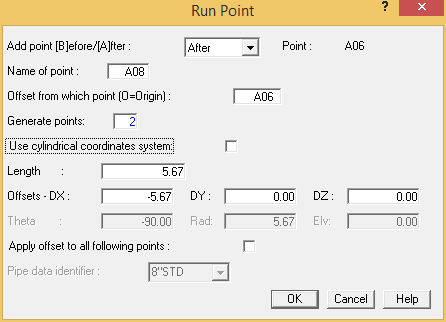
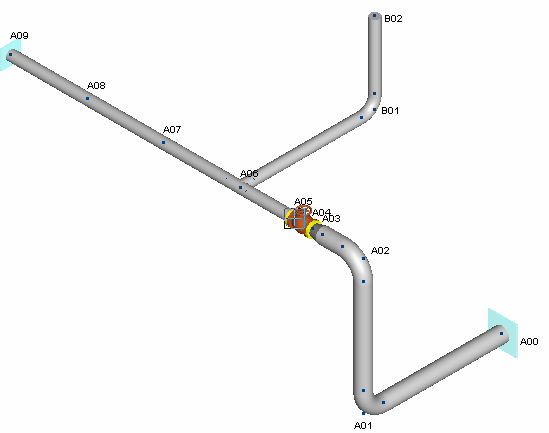
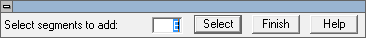
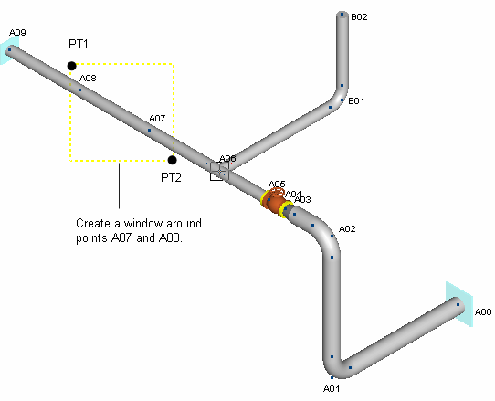
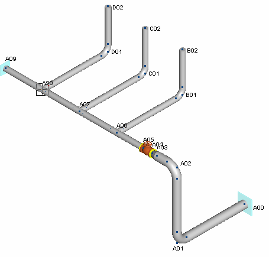

.png) Select Insert > Piping
Components > Run.
Select Insert > Piping
Components > Run.
- The Run Point dialog is displayed. Previously, you defined new points in this dialog. In this case, you will generate 2 new points along the existing run. In the Generate Points field, input 2. Tab to the next field and notice that AutoPIPE automatically updates the length and offset fields. Press OK.

| Note: |
By default, AutoPIPE will generate equally spaced intermediate points. You can override the default by specifying a value in the Offsets field. |
4. Two points are inserted in the model between the tee at point A06 and the anchor at point A07. Notice that the points from the tee to the anchor are no longer numbered sequentially. This is because the intermediate points were generated after the anchor point. To renumber the points, select Home > Operations > Renumber All Points. Press Yes in the Confirm dialog. The points are now numbered sequentially as shown in the following figure.

- Now that you have two intermediate points along Segment A, you can place new components at those locations. This exercise will demonstrate the ability to copy entire component assemblies. The first step is to select the components to copy. Choose Select > Segments > Segment.
- The control dialog shown below is displayed. Pick any point on Segment B and note that “B” now appears in the Select segments to add field, and that Segment B is highlighted. Press Select, then press Finish.

| Hint: | You can also select segments from the segment grid. |
- Select Home > Clipboard > Copy.
- The control dialog now prompts for the base point. Select the tee at point A06 and then press
OK to close the control bar.
-
.png) Segment B has now been copied
to the clipboard, where it is stored in memory for Paste
operations. Choose Select > Selection >
Clear to clear the highlighted points.
Segment B has now been copied
to the clipboard, where it is stored in memory for Paste
operations. Choose Select > Selection >
Clear to clear the highlighted points.
| Hint: | You can also clear a range by picking any single point in the model. |
- The next step is to specify the point(s) where the copied segment should be placed. Pick point PT1 shown in the graphic below, press and hold the mouse button, then “drag” to point PT2 and release. A dotted box should appear around points A08 and A07 as shown in the graphic below.

- Choose Select > Selection > Range. The section of pipe between A07 and A08 is highlighted.
.png)
- Select Home > Clipboard > Paste. The Paste dialog is displayed. Press OK to accept the defaults and place the copied segment at points A07 and A08.
- Select View > Zoom-Pan > Zoom Extents to view the extents of the model as shown in the following figure. Notice that the copied segments were assigned unique Segment names (C and D), and that all the points in the model are unique.

.jpg) 14. Select File >
Save > Save.
14. Select File >
Save > Save.